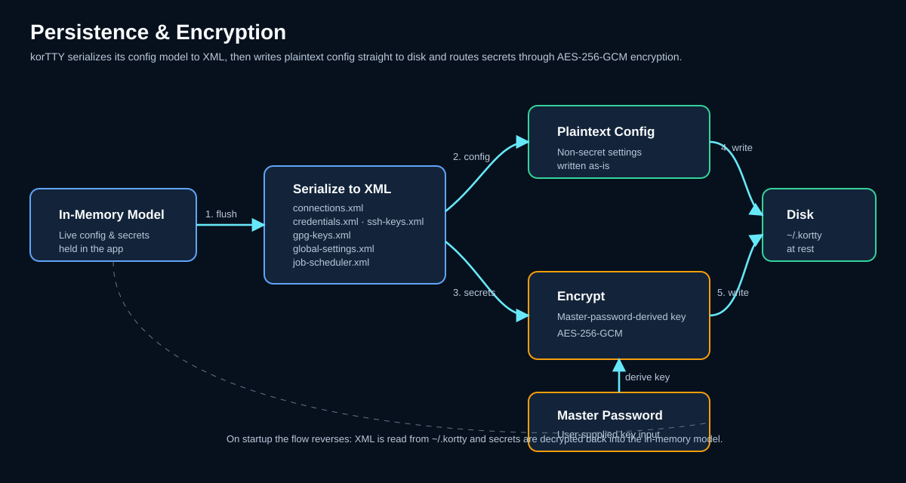
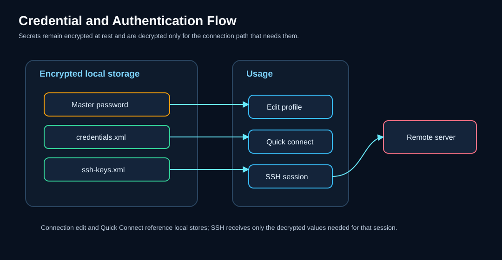

Security: credentials, keys & encryption¶
KorTTY protects your sensitive data with industry-standard encryption and centralized key management. All connection passwords, SSH key passphrases, and credential storage use AES-256-GCM encryption derived from a master password that is created on first launch.

Master Password¶
On first launch, you are prompted to create a master password (minimum 6 characters) that encrypts all stored secrets.
Setup¶
- Enter a password (the field border turns green when length is sufficient, red when too short).
- A strength indicator shows password quality; a warning appears for weak or common passwords, but you can confirm if needed.
- Confirm the password.
- Click Setup.
At-Rest Encryption¶
The master password itself is hashed with PBKDF2 (310,000 iterations) and never stored in plain text. The salt and hash are stored in ~/.kortty/master.key.
Every secret is encrypted with the master password it was saved under. Importing a backup made with another master password without overwriting your files therefore asks for the backup's master password once and re-encrypts the backup's secrets with your current one before they are copied; without it, the files that hold secrets are not imported, so no secret encrypted with a foreign master password ever reaches your profile. See A backup with another master password.
On subsequent launches, KorTTY prompts you to enter the master password to unlock encrypted data. Turning off Require master password on startup in Settings > Security hides this prompt and starts with the vault locked: stored passwords and keys stay unavailable until you unlock it (see Unlocking the vault later).
Optional auto-login weakens at-rest protection
The second Security option, Disable master password prompt on startup (auto-login), also removes the prompt but keeps the vault fully usable: korTTY writes your master password to ~/.kortty/master.autounlock — obfuscated only, not encrypted, with owner-only file permissions — and unlocks automatically on every start. The obfuscation key is embedded in the application, so file permissions are the only real boundary; anyone who can read ~/.kortty or a backup can decrypt all saved secrets. On a brand-new profile the option bootstraps a default master password with no dialog at all. korTTY asks for confirmation before enabling it, it is meant for throwaway/test environments, and a policy configuration that requires a master password disables it. Details: Security settings.
Note
If you lose the master password, encrypted data cannot be recovered. Delete master.key and credentials.xml, restart, set a new master password, and re-enter your passwords.
Unlocking the vault later¶
With the vault locked, choose Configuration > Security > Unlock Vault… and enter the master password; the menu item is greyed out while the vault is open. Saving an AI or translation API key, a Hugging Face token, a jump server password or a Job Scheduler password, starting an AI Swarm run on servers without an open terminal, asking the guide a question and generating a single- or multi-server workflow script with an encrypted AI key show their "vault locked" message with an Unlock Vault… button instead of a dead end. Connecting a saved connection whose password is stored in the vault, with Connect in the Connection Manager, a tab's Duplicate or Reopen Closed Tab, offers Unlock Vault… as well; if you do not unlock the vault there, korTTY asks you to type the password instead (see Signing in). Opening a project while the vault is locked lists the tabs whose password is in the vault in the window's restore bar; unlocking the vault, with its Unlock Vault… or any other way, opens them in every window (see Tabs that wait for you). Some places still only report the locked vault, for example an AI chat request or a key passphrase in the connection editor; unlock the vault from the menu first. After a successful unlock the action continues; Cancel leaves the vault locked without a second error. A wrong password keeps the dialog open, and cancelling it never quits korTTY.
Unlocking also restores the temporary SSH keys that could not be decrypted at the locked start; until then they stay stored encrypted, so saving connections in the meantime does not lose them. Windows that were already open while the vault was locked, such as the Connection Manager or the credential and key managers, do not pick up the unlock — reopen them to use stored secrets there.
Encryption Model¶
All sensitive data at rest is encrypted using AES-256-GCM:
- Algorithm: AES-256-GCM (Galois/Counter Mode)
- Key Derivation: PBKDF2WithHmacSHA256 with 310,000 iterations
- IV Length: 12 bytes (random per encryption)
- Authentication Tag: 128 bits (built-in integrity verification)
- Salt Length: 32 bytes (random per master password setup)
Each encrypted value combines a random IV with the ciphertext, encoded as Base64 for storage.
Credential Management¶
Store centralized username/password credentials that can be reused across multiple connections.
Opening the Manager¶
Menu: Configuration > Security > Credentials… (Ctrl+Shift+M, on macOS Cmd+Shift+M). The shortcut also works while a terminal has the focus.
Adding Credentials¶
- Click Add.
- Fill in:
- Name — Descriptive identifier
- Username — Login username
- Password Type — Stored Password, or External Command to fetch the password from a password manager (see Passwords from an external command)
- Password — Stored encrypted with AES-256-GCM
- Environment — Production (the default), Development, Test, Staging, or one of your own (see Environments and tab colors)
- Server Pattern (optional) — Glob pattern (e.g.,
*.example.com,10.0.0.*) for automatic credential matching to connections - Description (optional) — Free-text notes
- Click OK.
Passwords from an external command¶
Instead of storing the password, a credential can fetch it from your password manager every time it is needed. Choose External Command as the Password Type and enter a command that prints the password, for example:
op item get "db-prod" --fields password
bw get password "db-prod"
enpass-cli show "db-prod" -field password
- Stored encrypted — the command itself is encrypted with your master password, like a stored password.
- Shell — the command runs in
/bin/shon macOS and Linux and in PowerShell on Windows, so on Windows write PowerShell syntax ($env:NAME, not%NAME%). In the Flatpak package the command runs on the host, where your password manager's command-line tool is installed. - Output — the first line the command prints is the password. If the command exits with an error, korTTY shows its exit code and error output; empty output counts as an error too.
- No prompts — the command gets no input, so a tool that asks for a master password or PIN cannot be answered and fails at once. Unlock the password manager first, for example with
op signin, or withbw unlockandBW_SESSIONset in the environment korTTY was started from. The Flatpak package runs the command on the host without korTTY's environment, so thereBW_SESSIONmust be set in your desktop session, or passed in the command itself (for examplebw get password my-server --session <key>). - 10-second limit — a command that has not finished after 10 seconds is stopped together with every process it started, and korTTY reports the timeout. A Touch ID or system dialog the tool opens by itself must be confirmed within that time.
- Runs every time — the command runs whenever the password is needed: when you pick the credential in the connection editor and whenever a connection that uses it connects. Panes split from a connected tab reuse that tab's password.
- Test — the Test button next to the command runs it once and shows how many characters came back, never the password itself.
In the connection editor the password field shows Retrieving password... while the command runs, and korTTY stays responsive. Opening, duplicating or restoring a connection waits for the command before it connects, for at most the 10-second limit, and the window does not react during that time; if the command fails there, korTTY uses the connection's own saved password or asks for one.
Using Credentials in Connections¶
When creating or editing a connection:
- Go to the Connection tab.
- Select a stored credential from the Credentials dropdown.
- Username and password are filled in automatically; for an external command once it has returned the password.
The following diagram shows how credentials and SSH keys flow from encrypted storage to active connections:

Environments and tab colors¶
Every credential belongs to an environment: one of the built-in Production, Development, Test and Staging, or one you add. Environments... in the Credentials manager lists them; there you can add your own environments and rename or delete them. The built-in ones always stay, and an environment that a credential still uses cannot be deleted.
Any environment, built-in or your own, can have a tab color: select it, tick Mark this environment's tabs with a color and pick the color. A terminal tab that signed in with a stored credential of that environment then shows the color as a dot in front of its title and as a frame around its terminal, just like a connection's own tab color. Marking the Production environment red, for example, marks every tab that signs in with a production credential at once.
- Opt-in — no environment has a color until you pick one. New credentials start out in Production, so a default color would mark most tabs as production tabs.
- The connection's and the folder's color come first — a connection with a tab color of its own shows that color, and a connection in a folder with a tab color shows the folder's, whatever environment its credential belongs to.
- Only credential-backed connections — the color reaches tabs that signed in with a stored credential, including a teamwork connection that uses the team's default credential. Connections that log in with an SSH key, a temporary key or a password of their own have no environment; give them a tab color of their own, or color the Connection Manager folder they are in, instead.
- Applied on OK — color changes take effect when you click OK in the Environments dialog, and Cancel discards them. Open tabs in every window pick up the new colors at once, as they do when you move a credential to another environment.
- Not by color alone — pointing at a tab colored this way names the color and the environment, for example Tab color: purple (#7B1FA2), from the credential environment Lab for an environment of your own named Lab. Screen readers read the same text for the dot.
- Stored in
environments.xml— together with your own environments; see Configuration files.
Features¶
- Environment-specific — Organize credentials by deployment environment
- Server Pattern Matching — Automatically assign credentials to matching servers
- Encrypted Storage — Passwords are encrypted with AES-256-GCM
- Password managers — Fetch the password from a command such as
op,bworenpass-cliinstead of storing it - Automatic Usage — Select credentials directly in connection settings
SSH Key Management¶
Centralized management of private SSH keys with encrypted passphrases.
Opening the Manager¶
Menu: Configuration > Security > SSH-Keys… (Ctrl+Shift+I, on macOS Cmd+Shift+I)
Adding Keys¶
- Click Add.
- Select the path to your private SSH key file.
- (Optional) Enter the passphrase — it will be encrypted and stored.
- Click OK.
Key Features¶
- Centralized Management — Manage all SSH keys in one place
- Encrypted Passphrases — Key passphrases are stored encrypted with AES-256-GCM
- Key Copying — Use Copy to User Directory to copy keys to
~/.kortty/ssh-keys/; on macOS and Linux the copied private key is made owner-only (rw-------) and the folderrwx------, and copied keys are included in encrypted backups and restored with owner-only permissions - Wildcard Search — Quick search for keys using
*patterns - Automatic Usage — Select keys directly in connection settings
Using Keys in Connections¶
When creating or editing a connection:
- Go to the Connection tab.
- Select Private Key as the authentication method.
- Select the desired key from the SSH Keys dropdown.
- The key path and passphrase are filled in automatically.
Interactive SSH host-key trust¶
Terminal and SFTP connections, including the SSH bootstrap used by Mosh, share a trust-on-first-use (TOFU) verifier keyed by normalized host name and port. On first use, korTTY displays the server key algorithm and OpenSSH SHA-256 fingerprint; verify it out of band before accepting. The confirmation defaults to No. A previously trusted matching key is accepted silently, while a changed key is hard-blocked with the expected and offered fingerprints and is never retried or replaced automatically.
A changed key can be replaced only by an explicit decision, and only in a connection you opened yourself in a terminal tab or the SFTP manager (including its jump server). Review and Replace… in the changed-key alert shows the trusted and the new fingerprint side by side; the replace button stays disabled until you confirm that you verified the new fingerprint with the server administrator, and Close and Cancel remain the default buttons. The replacement is a compare-and-swap: it is stored only while the trusted key is still exactly the one you reviewed, so a key changed in another window in the meantime is never overwritten. Every replacement is logged with the old and the new fingerprint. Background and restored connections, and the SSH bootstrap of Mosh, keep the plain block.
Configuration → Security → Known Hosts… lists, searches and removes trusted keys. Removal works the same way: it deletes a key only while it still has the fingerprint shown in the confirmation, and the next connection asks again as on first use. With the enterprise policy key enforce-host-key-check, both replacing and removing are disabled, so only an administrator can change a trusted key.
Interactive pins are written atomically to ~/.kortty/ssh-host-keys.properties; a companion lock coordinates simultaneous korTTY processes. This store is distinct from the JobScheduler's connection-ID-based host-key pins in job-scheduler.xml, which protect unattended SSH, SFTP, and Rsync execution.
Importing OpenSSH known_hosts¶
Import from known_hosts... in the Known Hosts dialog takes over the servers you already trust in OpenSSH, so the first connection from korTTY does not ask again. The file chooser opens on ~/.ssh/known_hosts; you can pick any other known_hosts file. korTTY reads plain host names and addresses, [host]:port entries for other ports and comma-separated host lists, with ssh-ed25519, ecdsa-sha2-nistp256/384/521 and ssh-rsa keys. The file is read in the background, and before anything is stored a confirmation shows how many new keys would be trusted, with Cancel as the default button. Only import a file you trust: an imported key is accepted without the first-use prompt.
The import only ever adds keys. A host that korTTY already trusts with one of the file's keys counts as already trusted. A host that korTTY trusts with a different key is reported as a conflict and keeps its trusted key; its next connection shows the changed-key alert, where Review and Replace… works as described above. korTTY trusts one key per host and port, so when the file lists several keys for a new host, it stores the one its SSH client negotiates first (ECDSA before Ed25519 before RSA) and counts the others. A summary lists the keys added, already trusted and in conflict, and every line it skipped: hashed host names (|1|..., which cannot be turned back into a name, so korTTY asks for those hosts on first use), @revoked and @cert-authority lines, wildcard and negated host patterns, other key types, and malformed lines with their line numbers. A key the file marks as @revoked is never imported, and if korTTY already trusts such a key the summary warns you so you can remove it. As the import neither removes nor replaces a key, it stays available while the organization enforces enforce-host-key-check; conflicts then remain for the administrator to resolve.
Relaxing host-key verification¶
For lab or throwaway hosts you can turn the first-use prompt off and have korTTY accept an unknown key silently. This is an accept-new relaxation, not blind trust: a key that differs from one already pinned for that host is still hard-blocked, so a man-in-the-middle on a host you have connected to before is still caught. It is off by default and can be set at three scopes, in precedence order:
- Per connection — the Host key verification control in the Connection Manager's connection editor and in Quick Connect, with three states: Use default (inherit), Verify (force strict even if the group or global setting relaxed it), and Don't verify.
- Per group — right-click a group in the Connection Manager and toggle Disable host key verification; it applies to every connection in the group that inherits. The setting belongs to the folder, not to its name: renaming a folder moves it, and those of its subfolders, to the new name (after a rename merges two folders, verification stays off only if it was off in both), and deleting a folder removes them, so a new folder that reuses the name starts with verification on.
- Globally — Settings → Terminal → Disable host key verification for all connections, the base default for every connection that inherits at both levels above.
A jump server's own host key is never relaxed by any of these — the bastion is always verified strictly.
GPG Key Management¶
Manage GPG keys for backup encryption and connection/snippet export encryption.
Opening the Manager¶
Menu: Configuration > Security > GPG-Keys… (Ctrl+Shift+G, on macOS Cmd+Shift+G)
Adding Keys¶
- Manual Entry — Click Add to enter key ID and email manually.
- System Import — Click Import from GPG to import keys from your system's GPG keyring.
Editing and Removing Keys¶
- Select a key from the list.
- Click Edit to modify details, or Delete to remove.
Using Keys for Backup¶
- Open Settings > Backup.
- Select GPG Encryption as the encryption type.
- Choose the GPG key to use for encryption.
GPG-encrypted backups and exports are stored as .gpg files — a GPG backup as kortty-backup.zip.gpg — and need your system's gpg command. Creating one needs the recipient's public key; restoring or opening one needs the matching private key, and gpg may ask for its passphrase.
Stored security data¶
The following sensitive and security-related data is stored in ~/.kortty/; secret values are encrypted, while public verification material is not:
| File | Contents | Encryption |
|---|---|---|
credentials.xml |
Stored username/password credentials | AES-256-GCM |
ssh-keys.xml |
SSH key paths and encrypted passphrases | AES-256-GCM |
connections.xml |
Connection passwords (inline) and key passphrases (if not using SSH key management) | AES-256-GCM |
ssh-host-keys.properties |
Trusted public host keys for interactive Terminal, SFTP, and Mosh bootstrap connections | Public verification data; not encrypted |
job-scheduler.xml |
Scheduler sudo passwords and archive passwords; journal entries redact KorTTY-managed secrets | AES-256-GCM |
master.key |
Master password hash (PBKDF2, 310,000 iterations) and salt | PBKDF2 hash only |
master.autounlock |
Remembered master password for the optional auto-login | Obfuscated only — not encrypted; owner-only file permissions |
global-settings.xml |
AI profile API keys, translation API keys, optional Hugging Face token | AES-256-GCM |
session/last-session.xml, session/previous-session.xml |
The open windows and tabs, with the ids of their saved connections and the folder each local shell was in; no passwords, keys or screen text | Not encrypted; owner-only file permissions, not part of backups |
session/scrollback/*.enc |
Only when restoring the output is switched on (off by default): the newest output of each terminal pane, which can hold anything a terminal showed | AES-256-GCM with the master-password key; never written while the vault is locked, owner-only, not part of backups, deleted when the master password changes, a backup is restored or the option is turned off |
korTTY does not rewrite these files in place: a save goes to a temporary file in ~/.kortty that is then renamed over the old file, for the connections, credentials, SSH keys, scheduled jobs and master.key after flushing it to the disk, so a crash, a full disk or a killed process leaves the previous version intact. On macOS and Linux, korTTY keeps ~/.kortty at rwx------ and writes connections.xml, credentials.xml, ssh-keys.xml, job-scheduler.xml and master.key owner-only (rw-------), also when an older version left them readable by other users; on Windows they are protected by the permissions of your user profile.
A data file with connections, credentials, SSH or GPG keys, environments, themes or scheduled jobs that korTTY cannot parse at startup is moved aside as <name>.corrupt-<timestamp> without changing it, korTTY continues without its content, and a notice lists the moved files; the next save writes a fresh file. A file that cannot be read at all, for example while a virus scanner or another program holds it or while a network home directory is unreachable, stays where it is and korTTY does not save over it for the rest of the session; the notice lists it separately. master.key is never moved aside, because without it korTTY would treat the profile as new and mint a new salt: if it is damaged, unlocking fails with an error that names the file, and you restore it from a backup.
Security Best Practices¶
Warning
Selected terminal text sent to AI services can contain sensitive information such as credentials, hostnames, file paths, stack traces, or operational details. Before a selection goes to a profile other than an integrated model or a trusted local endpoint, korTTY masks the connection's password, your organization's replacement rules and well-known secret formats such as private keys, access tokens and passwords in URLs with *** (see Masking secrets before sending). That masking is pattern-based and misses secrets in other formats, so for sensitive data still prefer an integrated local GGUF model, or verify that you trust the remote endpoint before sending anything.
Master Password¶
- Use a strong, unique master password (at least 12 characters, mix of upper/lowercase, numbers, symbols).
- Never share your master password.
- Store it securely (password manager recommended).
SSH Keys¶
- Keep private key files protected with a passphrase.
- Copy keys to
~/.kortty/ssh-keys/for inclusion in encrypted backups; keys left in their original locations are only referenced and must be migrated separately. - Limit key file permissions (e.g.,
chmod 600). Copies in~/.kortty/ssh-keys/are made owner-only automatically. - Verify a first-use host-key fingerprint through a trusted channel before accepting it. Treat a changed-key warning as a possible server rebuild, DNS error, or man-in-the-middle attack and investigate instead of reconnecting repeatedly. Use Review and Replace… only after the server administrator has confirmed the new fingerprint.
JobScheduler¶
- Host-key Pinning: Host keys are pinned by default for unattended SSH/SFTP/Rsync jobs to prevent man-in-the-middle attacks. These connection-ID pins are intentionally separate from the normalized endpoint pins used by interactive Terminal/SFTP sessions.
- Sudo Passwords: Scheduler sudo passwords are encrypted and stored in
~/.kortty/job-scheduler.xml. - Journal Redaction: Job journal entries redact KorTTY-managed secrets before persistence (redacted mode is the default; full mode stores unredacted output).
Backup Encryption¶
- Always encrypt backups using either password-protected ZIP or GPG encryption.
- Store backup files in a secure location.
- Test restore procedures periodically to ensure backups are usable.
AI Integration¶
- API keys for AI endpoints are encrypted with your master password.
- The optional Hugging Face token is encrypted with the master password and is used only for approved model search/download requests to the trusted Hugging Face host.
- Each integrated
llama-serverbinds only to127.0.0.1on a random port and requires a generated local API key. Offline mode is mandatory; web UI, agent, UI MCP proxy, slot endpoint, and inherited server-option overrides are disabled. - GGUF downloads require an immutable repository revision and exact SHA-256 metadata. Runtime indexes require an Ed25519 signature, and every runtime ZIP is checked against its signed size and SHA-256 before safe extraction. Official application builds embed only the public runtime-channel trust root; a missing or invalid key fails closed before any update request, while the signing private key remains isolated in the human-dispatched promotion workflow.
- Signed runtime withdrawals are durable and fail closed. A verified index adds withdrawn runtime and installation IDs to
llm/runtime/revoked-v1, marks each installed package, clears a matching active pointer, stops its sidecars, removes it from healthy rollback history, and quarantines affected model bindings. The installer and process launcher both reject those packages, including after an interrupted update. Notification-only checks enforce a withdrawal without silently installing the offered replacement; Off makes no index request and therefore learns no new withdrawal until an explicit or enabled check. - A newly activated runtime is not promoted to healthy history merely because its bounded
--versioncheck passed. It remains pending until the first real GGUF-backed authenticated API start succeeds; that start failing removes the candidate and restores/rebinds the newest healthy non-revoked package when one exists. - Model recommendations and automatic prompt-family detection can refresh from a separate Ed25519-signed HTTPS catalog. The last valid cache is re-verified before use, and a monotonic sequence rejects signed older replays or equal-sequence version collisions before an atomic high-water update. Without the independent catalog public key, korTTY trusts neither network nor cache data and falls back to the built-in bootstrap. Production catalog and runtime signing are restricted to their main-branch, reviewer-protected GitHub environments; application builds receive only the public trust roots.
- AI profile configuration is stored locally; only your reviewed terminal selection or prompt is sent to the chosen service, with recognized secrets in the selection masked. Embedded inference stays on this computer.
- Knowledge-store scanning follows a fixed text allowlist, validates content, refuses symbolic links, and presents a preview. Only bounded retrieved excerpts, not the complete knowledge store, enter the model prompt. Those excerpts stay local for integrated/loopback profiles but leave the computer when an explicitly assigned cloud profile handles the request; knowledge-store roles and persisted profile assignments are the user's disclosure authorization.
- Remote Qdrant knowledge stores require HTTPS; plain HTTP is accepted only for loopback, and the optional API key remains vault-protected.
- Internet access is disabled by default for AI profiles; enable only when needed.
- Snippet AI actions never use internet access, even if the profile has it enabled.
- The fixed snippet/workflow Diagram request never receives knowledge-store excerpts, even when the profile has stores attached — the diagram prompt is built from the source alone.
Security Overview¶
| Feature | Implementation |
|---|---|
| Master Password Hashing | PBKDF2 with 310,000 iterations |
| Credential Encryption | AES-256-GCM |
| SSH Key Passphrases | Encrypted with AES-256-GCM and master password |
| Interactive SSH/SFTP/Mosh host keys | Shared normalized host:port TOFU, first-use fingerprint confirmation (optionally relaxed to accept-new), silent exact match, hard block on change; replacement only after explicit fingerprint confirmation, as a compare-and-swap |
| AI API Keys | Encrypted with AES-256-GCM and master password |
| Embedded llama.cpp | Loopback-only random port, generated API key, offline/hardened server flags, request leases |
| GGUF/runtime supply chain | Immutable revisions, SHA-256 verification, signed runtime index, durable revocation quarantine, rollback after failed health check or first real API start |
| Model/prompt catalog | Independent Ed25519 trust root, strict schema, monotonic anti-replay sequence, reverified atomic cache, protected human promotion, bootstrap fallback |
| RAG source ingestion | Central allowlist, UTF-8/PDF content checks, no symlink traversal, reviewed preview |
| RAG prompt context | Fixed retrieval limits, stable source markers, explicitly untrusted wrapper, explicit profile-based local/cloud disclosure |
| Optional auto-login | Master password stored obfuscated in master.autounlock with owner-only permissions; off by default, confirmation required, blocked by a policy that requires a master password |
| Backup Encryption | AES-256 password-protected ZIP or GPG-encrypted (legacy ZIP-encrypted backups remain importable) |
| JobScheduler Secrets | Sudo and archive passwords encrypted; journal redaction enabled by default |
| JobScheduler Host Keys | Host-key pinning required by default for unattended SSH/SFTP/Rsync jobs |
| Credentials | Never stored in plain text |
| Local data files | Atomic replace flushed to disk, owner-only ~/.kortty and secret stores, unreadable files moved aside or left untouched instead of overwritten |
Changing the Master Password¶
To change your master password (which re-encrypts all stored secrets with a new derivation):
- Open Settings > Security.
- Click Change Master Password.
- Enter your current (old) master password.
- Enter the new master password twice.
- Every master-password-protected secret is automatically re-encrypted with the new key: connection and jump-server passwords, SSH-key passphrases, stored credentials, AI-profile API keys and the global AI/translation/Hugging Face keys, RAG store secrets, and JobScheduler sudo/archive passwords. The change is staged — the new password only takes over once every store has migrated, so an error part-way through leaves the old password in effect. Individual secrets that cannot be migrated are left untouched, counted in the result message, and noted in the log; re-enter those manually.
Configuration Files Reference¶
All KorTTY data is stored under ~/.kortty/. Key security-related files:
~/.kortty/
├── master.key # Master password hash and salt (PBKDF2)
├── master.autounlock # Optional auto-login password (obfuscated, owner-only permissions)
├── credentials.xml # Encrypted credentials (AES-256-GCM)
├── ssh-keys.xml # SSH key paths and encrypted passphrases
├── gpg-keys.xml # GPG keys for backup/export encryption
├── connections.xml # Connection passwords and key passphrases
├── ssh-host-keys.properties # Interactive Terminal/SFTP/Mosh host-key pins
├── global-settings.xml # AI API keys and other encrypted settings
├── llm/models.xml # Model paths and typed launch settings (no model contents)
├── llm/runtime/ # Regenerable native packages; excluded from backup
├── llm/catalog/ # Regenerable signed-catalog cache; excluded from backup
├── llm/run/ # Temporary per-process API keys/logs; excluded from backup
├── rag/stores.json # Knowledge-store/source configuration
├── rag/stores/ # Regenerable HNSW snapshots; excluded from backup
├── job-scheduler.xml # JobScheduler sudo/archive passwords (encrypted)
├── kortty.log # Application log
└── history/ # Compressed terminal session history